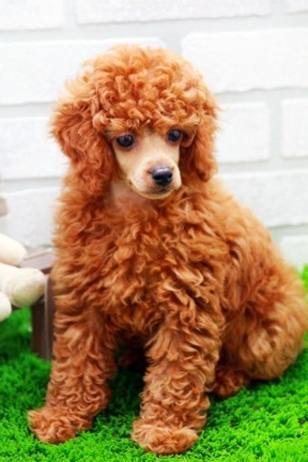

<!DOCTYPE html>
<html></html>
<head>
<title>html</title>
</head>
<body>
<h1><a href="index.html">PUPPY</a></h1>
<ol>
<li><a href="1.html">puddel</a></li>
<li><a href="2.html">history</li>
<li><a href="3.html">mypuppy</li>
</ol>
<h2>puddel</h2>
puddel is so cute<strong> today i will introduce <u> A poodle is a dog breed and the national dog of France. Poodle in the past was a hunting dog. It is native to Germany and, popularized by French aristocratic women, it grows into a long, woolly shape. Brushing is necessary at least once a day is necessary because the fur often gets tangled, and hair loss is small. It also needs frequent grooming because the fur grows fast. It is characterized by a bright, active personality and is very smart. Being active, you need to take a walk often, and it is easy to get separation anxiety because it follows the owner very much</u></strong></body>
</html>
